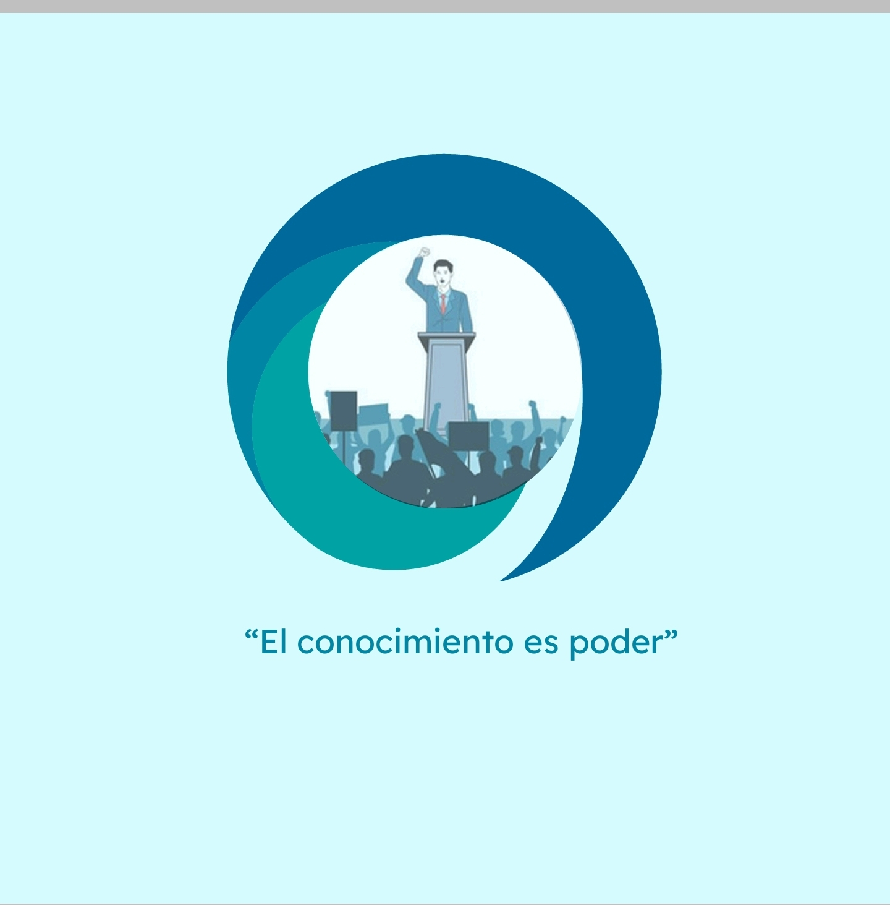

Elecciones 2025: Lo que debes saber
Las elecciones generales de 2025 se acercan y los candidatos ya han comenzado su campaña...
Noticias y análisis sobre el mundo político
Las elecciones generales de 2025 se acercan y los candidatos ya han comenzado su campaña...
El Congreso discute nuevas reformas económicas que podrían impactar a la población...
Déjanos tu opinión sobre los temas políticos más importantes.